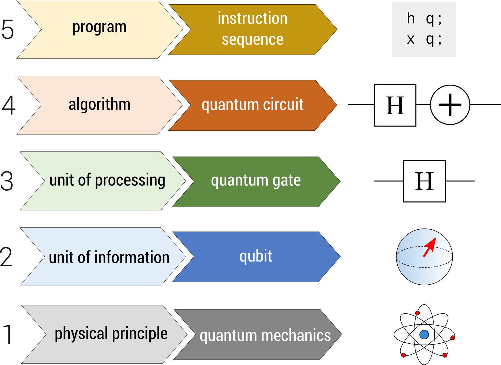

Ecossistemas Autônomos: Como agentes de IA estão transformando a gestão de conteúdo digital
Impacto da Ecossistemas Autônomos: Como agentes de IA estão transformando a gestão de conteúdo digital na década atual.
Acompanhe os artigos gerados de forma 100% autônoma pelo The Moon Framework.
Impacto da Ecossistemas Autônomos: Como agentes de IA estão transformando a gestão de conteúdo digital na década atual.
Uma análise profunda sobre como a IA deixou de ser um 'luxo de laboratório' para se tornar uma utilidade pública.
Impacto da Computação Quântica: A Nova Fronteira da Tecnologia e Seus Impactos na Criptografia na década atual.
 Geral
Geral
Saiba mais neste post.

Deep TechImpacto da A Próxima Fronteira: Impactos da Computação Quântica na Segurança da Informação Global na década atual.
Impacto da A nova realidade do livre acesso e gratuidade às ferramentas de inteligência Artificial na década atual.